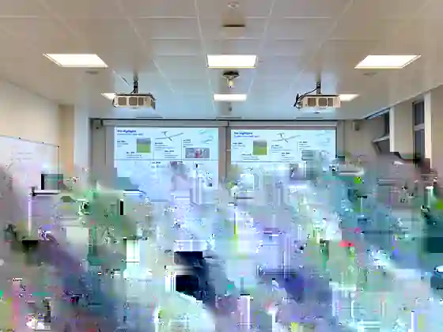
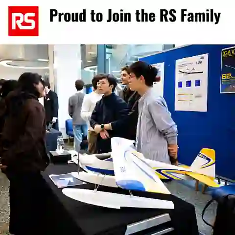

Aerodynamics
We shape the wing, model performance and chase the lowest possible power requirement.

We are ICAV-SPI
We’re a multidisciplinary student team at Imperial designing, building and flying solar-powered aircraft for extreme endurance.
Who we are
We’re around 20 students working across aerodynamics, structures, electronics, controls, manufacturing, flight testing and outreach.
Most of what we learn happens by doing: designing parts, building them, taking the aircraft into the field, flying it, and coming back with a longer list of things to improve.

Beyond the workshop
The aircraft is the centre of the project, but the team is bigger than the airframe. We take the work into events, talk people through what we’re building and show what student engineering looks like up close.
How we stay aligned
We meet as one team to review progress, challenge decisions and keep every subsystem moving toward the same flight goal. A design review usually turns into a workshop job, a test plan or something we need to rethink.



How we work
We organise around the aircraft, not around separate classroom exercises. Every subteam affects endurance.
We shape the wing, model performance and chase the lowest possible power requirement.
We turn large, lightweight wings into something we can actually build, transport and fly.
We integrate power, avionics, telemetry and the systems that keep the aircraft stable.
We assemble, launch, test and collect the data that decides what changes next.
We share the project, work with partners and bring sustainable aviation to a wider audience.

Partnerships
Support from the RS Student Fund helps us turn more of our design work into hardware, test more often and give more students hands-on engineering experience.
See our RS project profile ↗January 2026 · Wormwood Scrubs
For this flight-test day, these were the people setting up the aircraft, running the test and getting it safely back on the ground.
Behind the scenes
A lot of the project happens before anyone sees an aircraft leave the ground.

If you want to collaborate, support the programme, work with us on outreach or find out more about joining, get in touch.